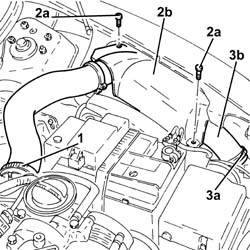

1048B22 AIR DELIVERY SLEEVE FROM HEAT EXCHANGER TO INTAKE MANIFOLD - R + R
- Path
- Procedures > 10 ENGINE UNIT > 1048 ENGINE AIR SUPPLY CIRCUIT > 1048B PRESSURE AIR CIRCUIT > 1048B22 AIR DELIVERY SLEEVE FROM HEAT EXCHANGER TO INTAKE MANIFOLD - R + R
- Kind
- repair procedure (removal / refitting; the operation number is the code)
- Applies to
- engines: 1.9 JTD 16V; all production periods
- Interactive page
- https://sloeber94.github.io/elrnDB-aGt/en/#/125001027
Applies to: engines: 1.9 JTD 16V; all production periods
 Removing
Removing
 Refitting
RefittingProceed with removal
- 1016A10 sound-proofing cover - r + r
1. Loosen the band and disconnect the air supply hose from the heat exchanger to the inlet manifold, connector side on the throttle body.
2. Undo the bolts (2a) and remove the protection (2b).
3. Loosen the band (3a) and disconnect the air supply duct from heat exchanger to inlet manifold (3b), heat exchanger side and remove it.

Applies to: engines: 1.9 JTD 16V; all production periods
Refitting
RemovingRefit in its seating the air supply duct from heat exchanger to inlet manifold, connect it to the heat exchanger and tighten the relevant band.
Place the protection back in its housing and secure it using the bolt.
Connect the air supply hose from the heat exchanger to the inlet manifold, throttle body connector side, and tighten the band.
Proceed with refitting
- 1016A10 sound-proofing cover - r + r
.